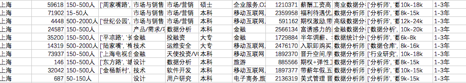
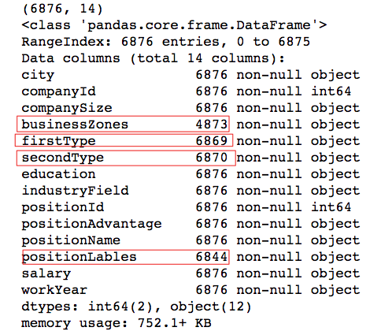
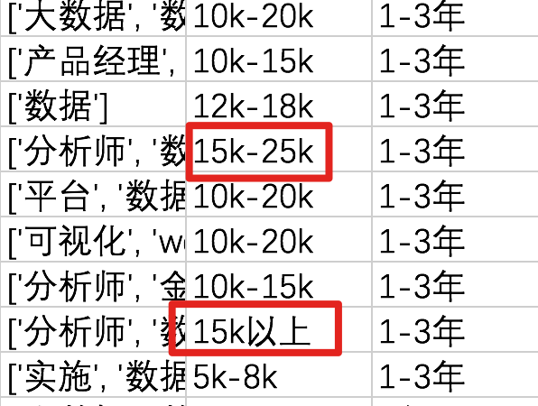
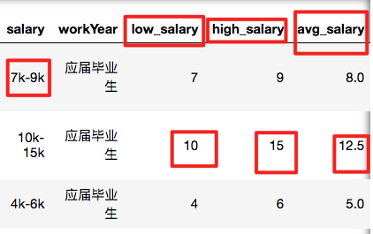
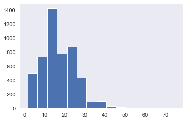
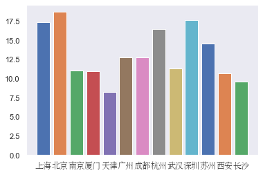
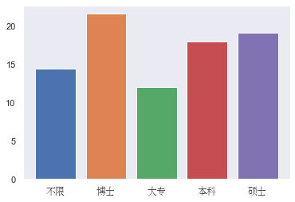
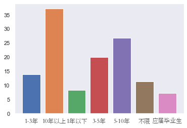

题目：你了解数据分析师的薪水吗？
1.1.1. 案例介绍
Hello, 我是小K，很高兴又和大家见面了，我们一起继续学习Python数据分析。
为了让你能不受干扰的在学习数据分析路上饱览胜景，请将屏幕调整成全屏，Windows系统：请按F11（或Fn+F11)；苹果系统：请同时按control+command+F。
细沙堆成山，滴水流成河。前面我们已经学习了数据分析江湖的Python技能，现在是时候身入江湖了，检验一下我们是否掌握了Python数据分析的技能。
一个专业的数据分析，他的定位应该是一个“谋士”，所谓谋士，应该运筹帷幄，决胜千里，不出五尺书堂，便知天下大势。
由于，我们现在已经从IT（Information Technology）时代进入了DT（Data Technology）时代。我们有能力低成本的收集和存储大量的数据，从而衍生出数据分析这个行业。
数据分析最重要的作用是从数据里面寻求真正有价值的信息，并帮助我们作出合理的决策。
为了更好的了解数据分析师这个岗位，本节课我们将以某招聘网站的2017年数据分析师职位数据为基础，进行数据分析。数据路径为：./data/analyse_spider.csv。
下面，我们了解一下数据的基本信息：

数据共包含14列，先看一下每一列的含义：
city：城市
companyId：公司ID
companySize：公司大小
businessZones：公司所在商区
firstType：职位所属一级类目
secondType：职业所属二级类目
education：教育要求
industryField：公司所属领域
positionId：职位ID
positionAdvantage：职位福利
positionName：职位名称
positionLables：职位标签
salary：薪水
workYear：工作年限要求
运行下方代码，查看数据的具体情况：
import pandas as pd
data = pd.read_csv('./data/analyse_spider.csv',encoding='GBK')
data.head()
data.shape
因为csv文件中带有中文字符而产生字符编码错误，造成读取文件错误，在这个时候，我们可以尝试将pd.read_csv()函数的encoding参数设置为"gbk"。
1.1.2. 分析内容
数据分析的大忌是不知道分析方向和目的，拿着一堆数据不知所措。一切数据分析都是以业务为核心目的，而不是以数据为目的。
所以，我们应该先定分析的目标，然后在处理数据。
我们本案例的目标很简单，就是根据该数据，分析影响薪资的因素：
- 地区对数据分析师的薪酬的影响；
- 学历对数据分析师的薪酬的影响；
- 工作年限对数据分析师的薪酬的影响。
有了目标和方向后，后面就是将目标拆解为实际过程。
1.1.3. 数据的清洗
数据的缺失值
数据的缺失值在很大程度上会影响数据的分析结果，如果某一个字段缺失值超过一半的时候，我们就可以将这个字段删除了，因为缺失过多就没有业务意义了。
注意：并不是，只要含有有缺失值的时候，我们就要将数据删除，如果数据量比较少、缺失值不多，并且对我们的分析指标没有实际影响时，我们就可以将其保留。
运行下方代码，查看数据的缺失值情况：
import pandas as pd
data = pd.read_csv('./data/analyse_spider.csv',encoding='GBK')
print(data.shape)
data.info()
为了方便大家更好的理解，我们将结果提炼出来，如下图：

通过结果我们可以看出：一共有6876个数据，其中businessZones、firstType、secondType，positionLables都存在为空的情况。companyId和positionId为数字，其他都是字符串。
从数量上可以看出，businessZones列的数据缺失量比较大，需要将该列数据删除。
其他三列的缺失值的总数量为45，并不会影响整体分析效果，我们可以删除这45条数据。
运行下面代码，删除缺失值：
import pandas as pd
data = pd.read_csv('./data/analyse_spider.csv',encoding='GBK')
# 删除businessZones列数据
data.drop(['businessZones'],axis=1, inplace=True)
# 删除含有NaN的数据
data.dropna(inplace=True)
data.info()
处理完空值之后，数据还剩6837条，13列。
删除重复值
处理完空值以后，我们还需要注意另外一个会影响我们分析结果的因素，就是重复值。
我们来看一下计算一下重复的数据，并将其删除。
使用data.duplicated()方法判断每一行是否重复，然后使用data.duplicated()[data.duplicated()==True]取出重复行，最后使用len()计算重复的数据。
下面运行下方代码，看一下是否有重复的数据，并删除。
import pandas as pd
data = pd.read_csv('./data/analyse_spider.csv',encoding='GBK')
# 删除businessZones列数据
data.drop(['businessZones'],axis=1, inplace=True)
data.dropna(inplace=True)
# 计算重复的数据数
print(len(data.duplicated()[data.duplicated()==True]))
# 删除重复数据
data.drop_duplicates(inplace=True)
data.info()
共有1830条重复的数据，使用data.drop_duplicates()删除后，还剩5000多条数据。
1.1.4. 整理数据和分析
数据的缺失值和重复值，是我们在分析之前必须要做，因为，他们的存在会很大程度上影响我们的分析结果。
接下来，我们需要做的事情就是，根据我们的分析需求去整理目标数据，从而方便我们的分析。
我们的第一个任务是薪酬分布情况，所以我们先来整理这个数据。

薪资字段格式基本分为15k-25k和15k以上这两种，并且都是字符串。
如果我们只想要薪资下限数据或者薪资上限数据时，怎么办呢？
最好的方式就将salary薪资字段按照最高薪水和最低薪水拆成两列，并且薪水的话如果用几K表示，直接用于计算，所以将k去掉。
这里我们可以使用pandas中的apply方法，针对薪酬这一列数据进行操作，结果如下图。

下面是拆分的具体代码：
# 定义拆分的函数
def split_salary(salary,method):
# 获取'-'索引值
position = salary.upper().find('-')
if position != -1: #salary值是15k-25k形式
low_salary = salary[:position-1]
high_salary= salary[position+1:len(salary)-1]
else: #salary值是15k以上形式
low_salary = salary[:salary.upper().find('K')]
high_salary= low_salary
# 根据参数用以判断返回的值
if method == 'low':
return low_salary
elif method == 'high':
return high_salary
elif method == 'avg':
return (int(low_salary) + int(high_salary))/2
# 赋值
data['low_salary']=data.salary.apply(split_salary,method='low')
data['high_salary']=data.salary.apply(split_salary,method='high')
data['avg_salary']=data.salary.apply(split_salary,method='avg')
data
下面我们具体分析一下代码的逻辑。
第一步，我们自定义了一个函数split_salary()函数，salary参数是使用apply函数必须要传的参数，其实就是data.salary的值。
第二步，使用salary.upper().find('-')判断salary值是15k-25k的形式还是15k以上形式，如果结果是-1，表示是15k以上形式，反之是15k-25k形式。为了避免k的大小写，我们用upper函数将k都转换为K，然后以K作为截取。
第三步，在split_salary函数增加了新的参数用以判断返回low_salary还是high_salary或者是avg_salary。
赋值上面的代码到代码框运行，查看拆分结果:
import pandas as pd
data = pd.read_csv('./data/analyse_spider.csv',encoding='GBK')
# 删除businessZones列数据
data.drop(['businessZones'],axis=1, inplace=True)
data.dropna(inplace=True)
# 删除重复数据
data.drop_duplicates(inplace=True)
# 复制代码，并运行
到此，我们数据整理部分完成，接下来我们看一下数据分析师的薪酬情况。
现在我们看一下，数据分析师薪资的分布情况。
import matplotlib.pyplot as plt
import seaborn as sns
sns.set(style='dark')
plt.hist(data.avg_salary)
plt.show()

图表中绘制了数据分析师薪资的分布，可以看出薪资的大部分在10k-30k之间，10k-20k这个范围最多。
现在观察不同城市、不同学历以及不同工作年限对薪资的影响。
首先，我们先按城市分组，然后对比每个城市的平均薪资。
import matplotlib.pyplot as plt
from matplotlib import font_manager
my_font = font_manager.FontProperties(fname='./data/STSONG.TTF')
sns.set(style='dark')
groups = data.groupby(by='city')
xticks = []
for group_name,group_df in groups:
xticks.append(group_name)
plt.bar(group_name,group_df.avg_salary.mean())
plt.xticks(xticks,fontproperties=my_font)
plt.show()

代码中我们用city进行分组，然后分别绘制了每个城市的平均薪资。
从图表中我们看出，北京的数据分析师薪资高于其他城市，上海和深圳稍次，广州甚至不如杭州和苏州。
接下来，我们再看看不同学历对薪资的影响。
我们同样按学历进行分组，然后对比不同学历的平均薪资。
import matplotlib.pyplot as plt
from matplotlib import font_manager
my_font = font_manager.FontProperties(fname='./data/STSONG.TTF')
sns.set(style='dark')
groups = data.groupby(by='education')
xticks = []
for group_name,group_df in groups:
xticks.append(group_name)
plt.bar(group_name,group_df.avg_salary.mean())
plt.xticks(xticks,fontproperties=my_font)
plt.show()

代码中我们用city进行分组，然后分别绘制了不同学历的平均薪资。
从图表中我们看出,博士薪资最高，硕士和本科基本持平，大专学历稍有弱势。
最后，我们再看看不同工作年限对薪资的影响。
我们同样按工作年年限进行分组，然后对比不同年限的平均薪资。
import matplotlib.pyplot as plt
from matplotlib import font_manager
my_font = font_manager.FontProperties(fname='./data/STSONG.TTF')
sns.set(style='dark')
groups = data.groupby(by='workYear')
xticks = []
for group_name,group_df in groups:
xticks.append(group_name)
plt.bar(group_name,group_df.avg_salary.mean())
plt.xticks(xticks,fontproperties=my_font)
plt.show()

从图表中我们看出，拥有10年以上的数据分析工作经验的人平均薪资最高，并且是年限越长薪资就越高。
分别拷贝上面的代码运行，查看图表绘制：
import pandas as pd
data = pd.read_csv('./data/analyse_spider.csv',encoding='GBK')
# 删除businessZones列数据
data.drop(['businessZones'],axis=1, inplace=True)
data.dropna(inplace=True)
# 删除重复数据
data.drop_duplicates(inplace=True)
# 定义拆分的函数
def split_salary(salary,method):
# 获取'-'索引值
position = salary.upper().find('-')
if position != -1: #salary值是15k-25k形式
low_salary = salary[:position-1]
high_salary= salary[position+1:len(salary)-1]
else: #salary值是15k以上形式
low_salary = salary[:salary.upper().find('K')]
high_salary= low_salary
# 根据参数用以判断返回的值
if method == 'low':
return low_salary
elif method == 'high':
return high_salary
elif method == 'avg':
return (int(low_salary) + int(high_salary))/2
# 赋值
data['low_salary']=data.salary.apply(split_salary,method='low').astype('int')
data['high_salary']=data.salary.apply(split_salary,method='high').astype('int')
data['avg_salary']=data.salary.apply(split_salary,method='avg')
# 复制代码，并运行
薪资我们就简单的分析到这里，我们简单的归纳一下我们数据展现的结果：
- 数据分析师的薪资的平均数是17k，最大薪资在75k，大部分分析师薪资在10k-20k之间。
- 北京的数据分析师薪资高于其他城市，上海和深圳稍次，杭州和苏州已经超过广州。
- 薪资最高的是博士，硕士和本科的薪资基本持平，大专学历稍有弱势。
- 工作年限越长，薪资就越高。
根据上面数据展现的结果可以得到这样的结论：北上广深依然是我们高薪就业地，同时工作年限和学历都是都与薪资成线性增长趋势。
1.1.5. 总结
本案例采用的是2017年的数据，分析的结果与当下数据分析师的实际薪酬有一定的差异。
本案例的目的是让大家更好的了解数据分析，以及数据分析的基本流程，最终结论仅供参考。
如果想要更深的挖掘数据中信息，我们还需要学习更多的挖掘以及统计学的相关知识。